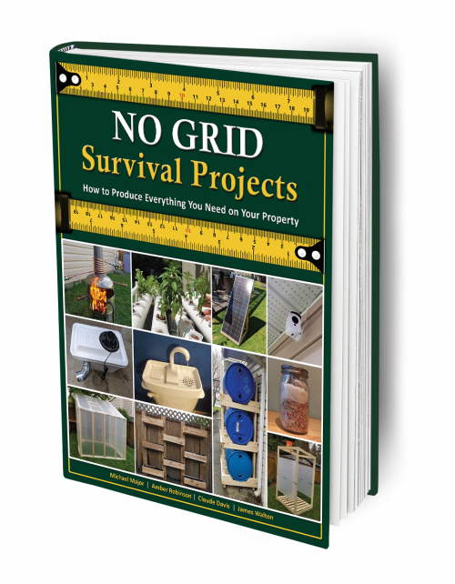

No Grid Survival Projects – BRAND NEW!
Product profile · Marketplace data 2026-10-09 · Sales-page research 2026-10-09 · Categories: Survival

Marketplace record
| Product type | Book (printed) |
|---|---|
| Price | $37.00 (Single payment) |
| Affiliate commission | 75% |
| Refund window | Per the vendor's sales page — check the official page before buying |
| Vendor | nogridpr (listed since 2022-11-21) |
| Marketplace stats* | Cart conversion — · cancel rate — · affiliate earnings/sale $27.75 |
* Vendor-side marketplace statistics reported by Digistore24; they depend on traffic quality and are not a forecast.
Vendor's marketplace description
• Compliant! • 75% commission for initial product sales; 75% commission for upsells • Performs well in most niches: survival, homesteading, off grird, self-sufficiency, remedies, etc. • Put it to test! If you would like to promote this offer, you will need to be whitelisted. Please send an email with your affiliate ID at affiliates.gbs@gmail.com. Promolink: https://www.digistore24.com/redir/471054…
From the vendor's sales page
Page title: No Grid Survival Projects
Meta description: 70 ingenious DIY projects that can help you protect your family during hard times - Clear, step-by-step instructions, pictures, and sketches - Access to Videos for each project
Headline
You Probably Won’t Survive an EMP Without This
Keep-the-book Money-Back Guarantee!
Prices mentioned on the page: $37.
CTA buttons: “Get Started →”
Opening copy
If you get No Grid Survival Projects today, you’ll also take advantage of - a limited offer - of 3 exclusive gifts that will be off the table soon:
The first bonus is called How to Outlive an EMP the Early Pioneer Way . This is a day-by-day guide that shows you exactly what to do after an EMP every day for 30 days straight using the survival skills of our ancestors.
The third bonus you’ll receive is How to Make an Herbal Apothecary . You'll need this one for the extremely detailed instructions on how to build your own natural pharmacy from scratch using the plants grown in your medicinal garden or the ones you forage for around the house.
Research method: raw HTML fetch · 349 words on page · quality: medium · researched 2026-10-09. Full research file (MD) ↗
Where to check it out
Read the vendor's full sales page (current price, guarantee terms and bonuses are listed there):
View official sales page
That link is an affiliate link — if you buy through it we earn a commission from the vendor at no extra cost to you.